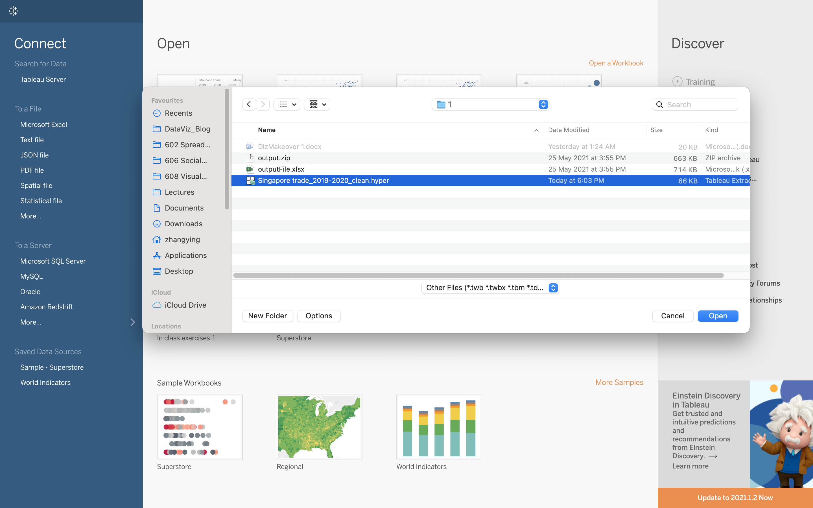
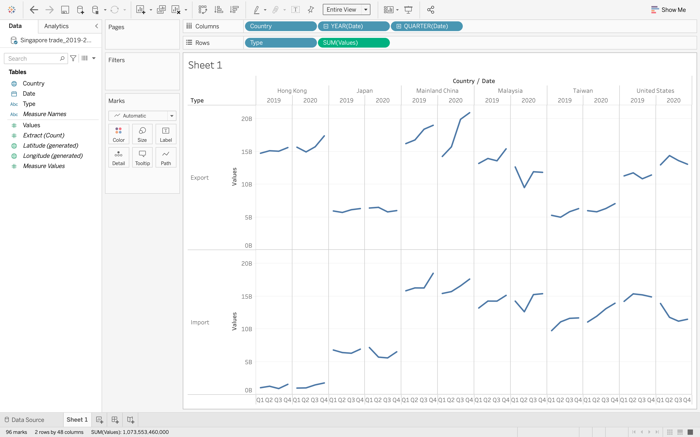
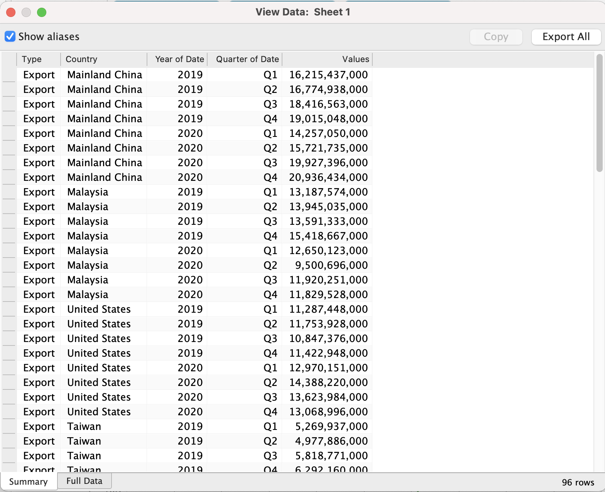
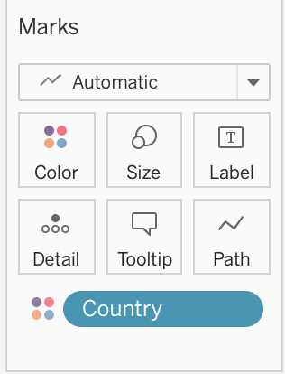
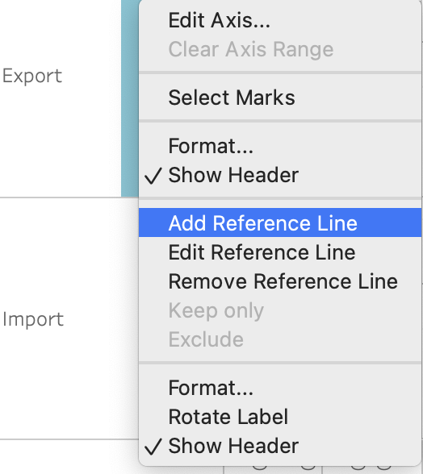
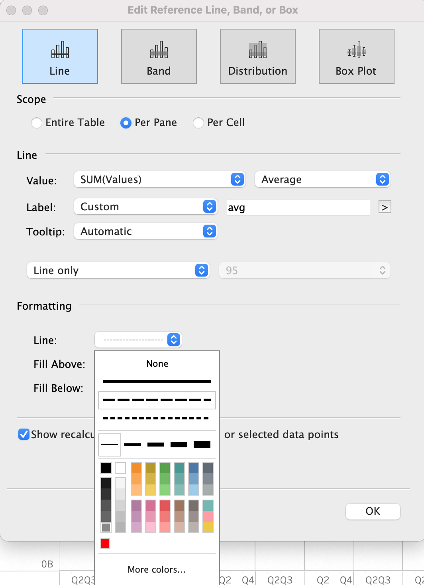
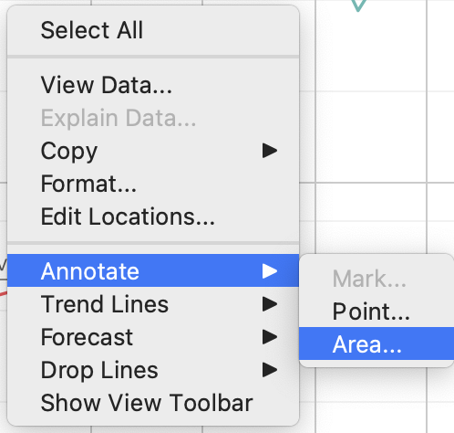
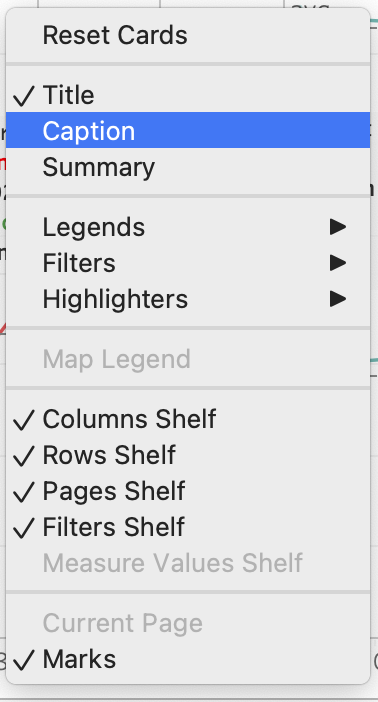
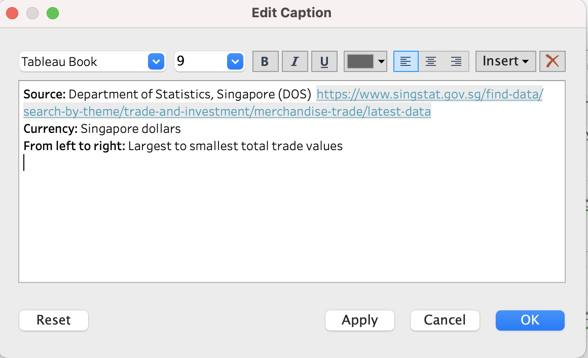

1 Critique of Visualisation
The original visualisation can be seen below. 
1.1 Clarity
- The main title does not match with the data in the graph. Main title shows data from 2019 to 2020, but the graph plots data from 2019 till 2021.It will create confusion among readers. Main title also does not indicate that the merchandise trade was between Singapore and its top 6 trading countries between 2019 to 2020.
The graph does not have any subtitle to describe the information or provide any insight derived from it.
x-axis label does not match with its values. x-axis label is Month of Period, but x-axis values are years, i.e. 20219,2020 and 2021.
Scales in y axis for Export and Import are different. For example, in the first pane of Hong Kong, monthly Export values range from 0-6M while monthly Import values are only between 0-800K. Such plot may mislead readers and give them the wrong perception of the actual merchandise trade volumes.
1.2 Aesthetic
The main title at the top is not in line with the main graph and country/region names in each pane is not in line with individual graph.
There’s overlap between Export and Import. The mixture of colors makes the the graph a bit blur and not easy to differentiate between the two variables.
x-axis labels Month of Period is not necessary as it’s time series and should be self explanatory.
Annotations are not used to convey points, leaving the reader to interprete the purpose of the graph. Lack of information source, indication of currency and unit.
2 Alternative Design
The proposed design is as follows.

2.1 Clarity
Title and subtitle are added to explain the purpose and major findings of the visualization. Only data in 2019 and 2020 is selected and avoid conflicts between title and graph. Instead of looking at monthly merchandise trade, the new visualization will look at data in quarterly level. The aggregated data can give readers clearer perspectives on the seasonal changes between two years and provide them meaningful insights.
Export and import are separated into two sections vertically. Scales of the two are set to be the same. Therefore, comparison between export and import can be conducted directly and clearly. Meanwhile, each country/region’s data is divided into two parts based on the year. So it’s easier to compare quartely trend changes between two years.
x-axis values are changed to four quarters which corresponding to the title.
2.2 Aesthetic
Chart Title and country/region names are aligned with the main graph and individual graphs.Six country/region are sorted in descending order based on the sum of export and import values.
Export and import are separated into two sections and coulor is used to differentiate different categories, i.e. country/region.
x-axis labels are removed.
Annotations are added to provide detailed analysis on individual country/region and missing information like source and currency.
3 Proposed Visualization
Please view the interactive visualisation on Tableau Public here.
4 Step-by-step Guide
4.1 Data Cleaning using Tableau Prep Builder
4.1.1 Download data from DOS website
Enter DOS website with the link and click Download all in Excel under Merchandise Trade by Region/Market

4.1.2 Loading data into Tableau Prep Builder
- Open Tableau Prep Builder and use it to do the data preparation.
- Open Finder and locate the data file. Drag the file into the the working pane.

4.1.3 Clean data
- Check Cleaned with Data Interpretation
- Drag T1 working sheet into the Flow Pane
- Click + and choose Clean Step

4.1.4 Select target periods and countries
- Change to Show List View. Select 24 fields from 2019 Jan to 2020 Dec and field Variables.
- Click on Keep Only Fields.

- Choose Show Profile Pane. Select targeted 6 countries/regions.
- Click on Keep Only.

4.1.5 Splits field variables and create new fields
- Click on … dropdown list and select Custom Split.
- Use separator (, split off first and 1. Rename field to Country.
- Repeat the above steps, change first to last. Edit value to Thousand Dollars and rename field to currency.


4.1.6 Pivot data
- Click + on Clean 1 step and choose Pivot.
- Change to Show List View.Select 24 months Fields and drag to Pivot Values.

4.1.7 Convert pivot values from thousand dollars to dollars
- Click … on the Pivot1 Values. Choose Custom Calculation.
- Fill in formulas.


4.1.8 Change Field Currency to Type
- Click Group Values under Currency Manual Selection. Change field value Thousand dollars to Import.
- Change Field Name from Currency to Type.

4.1.9 Clean second working sheet T2 and combine 2 tables
- Repeat the above steps and clean T2.
- Drag T1 to T2 and choose Union. Create a new table called Union 1.
- Remove new field Table Names.

4.1.10 Create output
Click + on the Union 1 step and choose Output.
4.1.11 Run flow and save file
- Change the file name to Singapore trade_2019-2020_clean.
- Click Run Flow and save the file.

4.2 Data Visualization using Tableau Desktop
4.2.1 Load cleaned data file into Tableau Desktop
- Open Tableau Desktop and drag the cleaned data file into the working pane

4.2.2 Draw skeleton plot
- Drag Country into Columns.
- Drag Date into Columns and date become years. Click Years and choose Quarter.
- Drag Type into Rows.
- Drag Values into Rows.

4.2.3 View Data
- Click View Data under Analysis and check the new data set.


4.2.4 Choose color to differentiate countries
- Drag Country into Color.

4.2.5 Change line thickness
- Click Size, drag the circle to the left and make the line thinner.

4.2.6 Sort Countries in descending order
- Click dropdown list in the legend Country and choose Sort.
- Select Sort By Field and Sort Order Descending.
- Choose Field Name Values and use default Aggregation Sum.


4.2.7 Add reference line into the graph
- Click Values y axis and choose Add Reference Line.

- Set the reference line as below and add average line for each quarter.

- Click Values y axis and uncheck Show Header to remove y axis label Values.
4.2.8 Hide field labels for columns and rows
- Click column field label and select Hide Field Labels for Columns.
- Click row field label and select Hide Field Labels for Rows.

4.2.9 Change the main titles and add subtitles
- Click title, change the main title and add subtitle.

4.2.10 Add annotations
- Click one of the pane and choose Area under Annotate.
- Add findings using annotation area.

4.2.11 Add Captions
- Click x axis and choose Caption. Add data source, currency and notes.


5 Derived Insights
My proposed design is as below:

1. Singapore Merchandise export with 6 major trading parterners
Compared to 2019, Singapore’s yearly merchandise export to 6 countries/regions generally remain the same or slightly increased except for to Malaysia. It’s consistent with the overall export growth rate 4.3% despite the Covid pandemic in 2020 and one of the drivers is the persistent global demand for semiconductors and pharmaceuticals (KENTARO IWAMOTO, 2021). For the largest export destionation China, export value declined in the first two quarters while it increased rapidly from Q3 onwards. It’s projected to keep the increase trend in 2021 given its good control of covid 19 and progressive vaccination program. It needs to get Singapore’s government and cooperates more attention. Singapore also experienced increased demand from United States in 2020. However, the demand decreased slightly in Q4 2020 compared to previous quarter though it’s still higher than the same period in 2019. It maybe related to the worsening covid situation in America and more research can be conducted to investigate the change.
Singapore exports grow in 2020 despite COVID turmoil
Singapore’s Top Trading Partners
2. Singapore Merchandise import with 6 major trading parterners
Compared with export, Singapore’s yearly import remains relatively stable in 2020. Though there’s some fluctuations over the quarters in some countries. It’s quite alarming that import from United States dropped significantly and the decreasing trend could probably continue in 2021. Besides that, import from neighbouring country Malaysia declined a lot in Q2. The main reason could be Malaysian Movement Control Order (MCO) 1.0 implemented from 18 March to 3 May 2020. It led to a hit to Malaysian’s economy. Singaporean government should monitor Malaysia’s export regulations&policies closely as Singapore relies heavily to it.It’s vital to keep a secure supply chain of food and other resources. Government needs to review its current import strategies and diversitify its import sources.
Wiki:Malaysian movement control order
3. Trade with Taiwan
Taiwan is the only region experienced growth in both export and import among 6 listed countries/regions.Taiwan has became one of the most important sources of import and the yearly import value has reached more than 40B singapore dollars. Singapore and Taiwan signed a free trade agreement including removing custom duties to deepen bilateral trade in 2013. Both parties shall work more closely to find out potential trading opportunties.
Economic Partnership Agreement Between Singapore and Taiwan